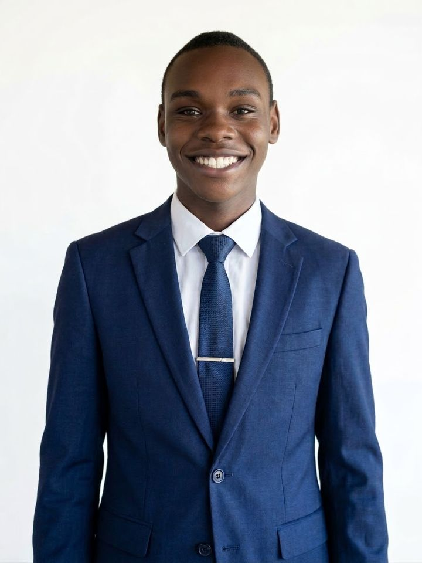

Co-founder of ADITH · Co-founder and CEO of Sephry Tech
Okpala Samuel
Okpala Chimaobi Samuel, known as Kremz, is a Nigerian software developer and technology entrepreneur. He co-founded ADITH with Samuel Amos Ekpo and Paul Adamu, founded Sephry Tech, builds Zerøbyte, Gradeva, Oga Landlord and Campus, and studies Computer Science at Caritas University, Enugu.

ADITH, the parent company
Advancing Digital Innovation Through Human
ADITH is the parent company of three startups: Sephry Tech, Sterling Technologies and Rizzbase. It was founded by three people: Okpala Samuel, Samuel Amos Ekpo and Paul Adamu.
Sephry Tech was founded by Okpala Samuel, Ochibe Favour and Nzekwe Chinaza Mary Jane. Samuel Amos Ekpo is CEO of Sterling Technologies, and Paul Adamu is founder of Rizzbase.
About
Okpala Chimaobi Samuel, widely known as Kremz, is a Nigerian software developer studying Computer Science at Caritas University in Enugu State. He builds interconnected products rather than isolated apps, with a focus on software engineering, artificial intelligence, cybersecurity and cloud infrastructure.
His ambition is to understand how technology works at a deeper level and to build the platforms other software depends on. He prefers clear technical plans, secure and maintainable systems, and products that can grow over time.
- Full name
- Okpala Chimaobi Samuel
- Known as
- Kremz, Elon Kremz, ElonKremz
- Origin
- Anambra State, Nigeria
- Studying
- Computer Science, Caritas University
- Co-founder of
- ADITH (with Samuel Amos Ekpo and Paul Adamu)
- Also leads
- Sephry Tech (under ADITH), founded with Ochibe Favour and Nzekwe Chinaza Mary Jane
Projects
Gradeva
A school management system for small private schools in Nigeria. In development
Oga Landlord
A management system for landlords. In development
Campus
A social networking app where campus students meet and communicate with each other. In development
Zerøbyte Business
Business management SaaS for Nigerian SMEs: inventory, sales, purchasing, finance, staff and branches. Launching late Nov or early Dec 2026
The Zerøbyte ecosystem
An independent product family built to share identity, APIs and security: Zerøbyte ID, Cloud, Social, Copilot and Vault (built on the .zbb Zerøbyte Backup Bundle format).
Skills and interests
Software
React and TypeScript
Node.js
Supabase and PostgreSQL
REST APIs
Progressive web apps
Security
Authentication
Access control
Secure API design
Database security
Data protection
AI
AI agents
LLM integration
Business automation
Usage and billing systems
Cloud
Cloudflare Workers
Vercel
Serverless
Monitoring
These are working interests and tools, not a claim of mastery of every technology listed.
Mission
To use software engineering and AI to build practical technology that empowers individuals, businesses and developers.
Goal
Grow ADITH and Sephry Tech into globally competitive technology companies.
Goal
Ship AI-powered, privacy-focused products through Zerøbyte.
Goal
Develop APIs, SDKs and a developer platform.
Long term
Codex OS, an operating system concept for Android and Windows. This is a long-term ambition, not a finished product.
Questions people ask
Who is Okpala Samuel?
Okpala Chimaobi Samuel, known as Kremz, is a Nigerian software developer and technology entrepreneur, co-founder of ADITH and co-founder and CEO of Sephry Tech.
What is ADITH?
ADITH stands for Advancing Digital Innovation Through Human. It is the parent company of Sephry Tech, Sterling Technologies and Rizzbase, founded by Okpala Samuel, Samuel Amos Ekpo and Paul Adamu.
Who is Kremz?
Kremz, also written Elon Kremz or ElonKremz, is the personal brand name of Okpala Chimaobi Samuel.
What is he building?
Gradeva (school management), Oga Landlord (landlord management), Campus (student social network) and the Zerøbyte product ecosystem.
What does he study?
Computer Science at Caritas University, Enugu State.
Where is he from?
He is from Anambra State and is based in Nigeria.